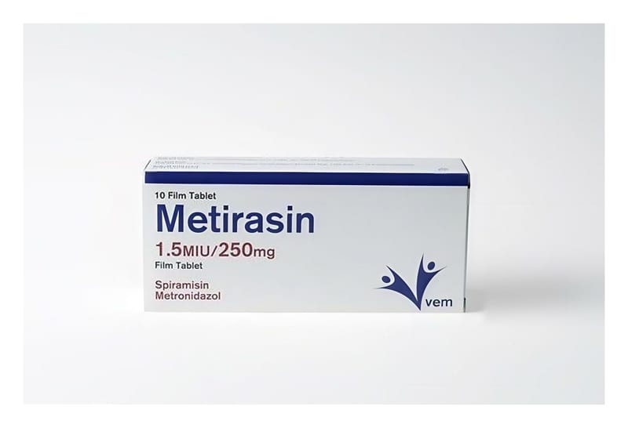

Metirasin 1,5 miu/250 mg Film Tablet, 14 Adet

Ne için kullanılır
KT · Bölüm 1METİRASİN’in etkin maddeleri spiramisin ve metronidazoldür. METİRASİN, antibiyotik grubuna ait kombinasyon bir ilaçtır. Vücudunuzda enfeksiyona yol açan bakterileri öldürür. METİRASİN karton kutu içerisinde 1,5 MIU spiramisin ve 250 mg metronidazol kombinasyonu içeren 10 adet ve 14 adet film kaplı tablet şeklinde sunulmaktadır.
METİRASİN aniden başlayan (akut), uzun süre devam eden (kronik) veya tekrarlayan diş enfeksiyonlarında kullanılır. Diş enfeksiyonları; - Diş abseleri, deri altındaki dokunun iltihaplanması (flegmon), üst çene kemiğinin ön orta kısmındaki dokuların iltihabı (premaksiller selülit), dişlerde kuronu çevreleyen yumuşak dokunun iltihabı (perikoronit) - Diş eti iltihabı (gingivit), ağız mukozası iltihabı (stomatit) - Diş çevresi zarının iltihabı (periodontit) - Kulak altı tükrük bezinin iltihabı (parotidit), çene altı bezi iltihabı (submaksilarit)
METİRASİN ayrıca odonto-stomatolojik (ağız boşluğu) ameliyatlarında operasyon sonrası lokal enfeksiyonların oluşmasını önleyici tedavi olarak kullanılır. Bu ilaç sığır sütünden elde edilen laktoz monohidrat yardımcı maddesini içerir.